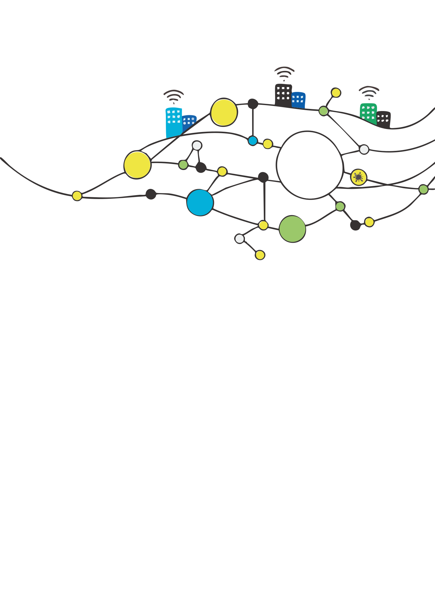
 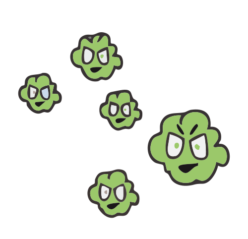
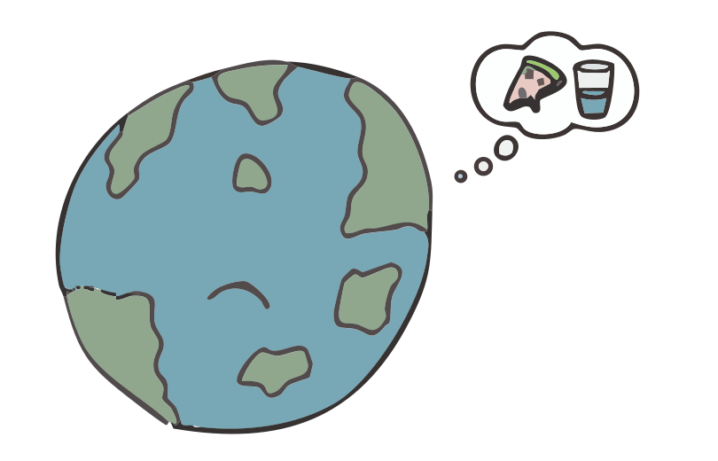
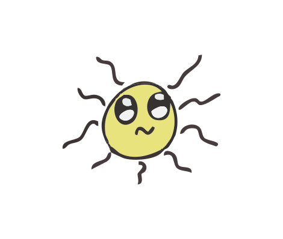
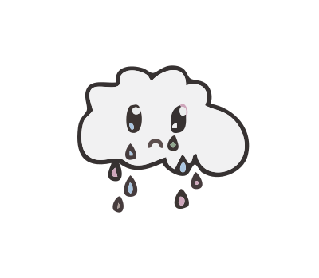
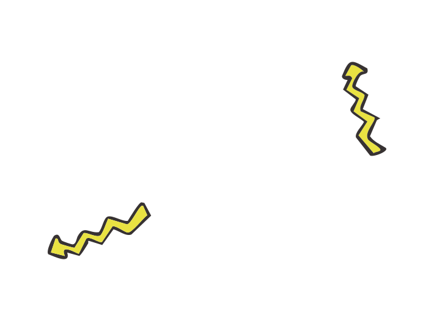
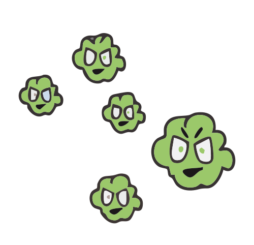
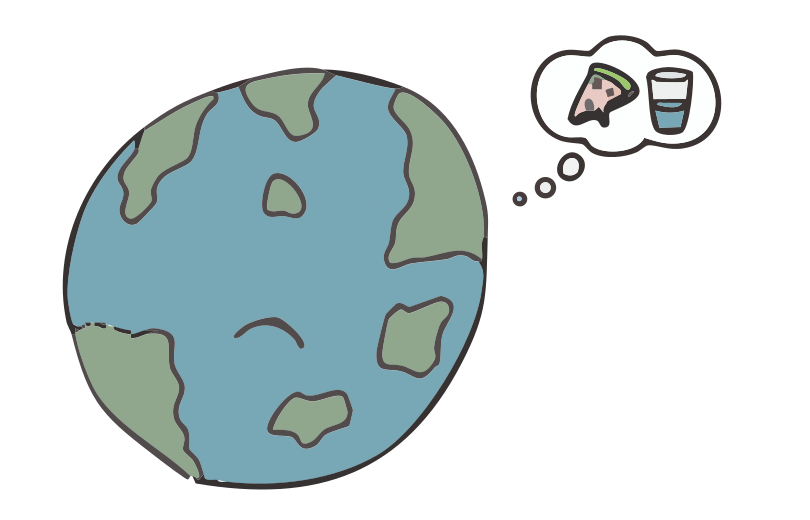
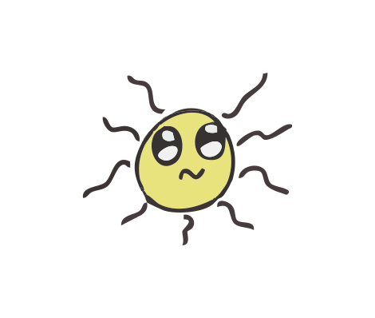
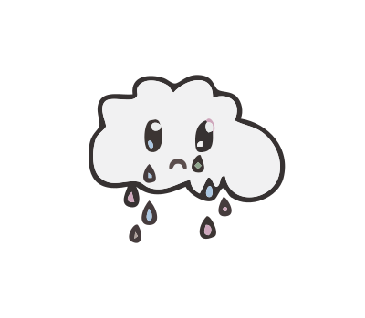
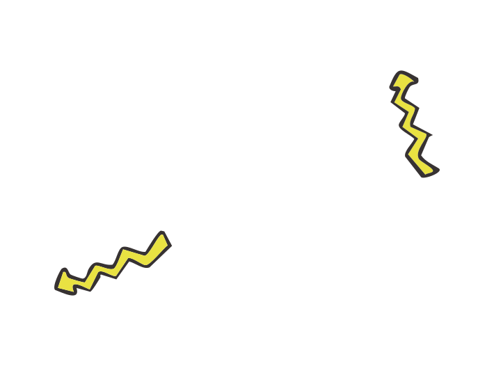
Webben og planeten vår
Internett er helt supert, men det trenger strøm for å fungere
Oppdag webbens skjulte innvirkning på planeten
Store datamaskiner kalt datasentre bruker strøm for å holde internett i gang.
Elektrisitet kommer fra
forskjellige kilder
Elektrisiteten som brukes av nettet kan føre til noe som kalles drivhusgasser
| Ikke-fornybar energi | Fornybar energi |
|---|---|
|
|
Drivhusgasser forurenser planeten
- karbondioksid (CO2)
- metan (CH4)
- lystgass (N2O)
Klimaendringer kan føre til:
Varmere dagerMore hot days can be yucky, and we don't want that
NaturproblemerDet kan bli tøft for dyr og planter med det skiftende klimaet
Mindre mat og vannKlimaendringer kan gjøre det vanskelig å dyrke mat og finne rent vann
Vannstanden øker Issmelting kan gjøre at vannstanden øker og det kan føre til flom
Mennesker og helseVarme dager kan gjøre folk syke, og vi trenger å holde oss friske
Helsprøtt værKlimaendringer gjør at stormer og skogbranner skjer oftere og blir verre
PengeproblemerKlimaproblemer kan koste mye penger å fikse
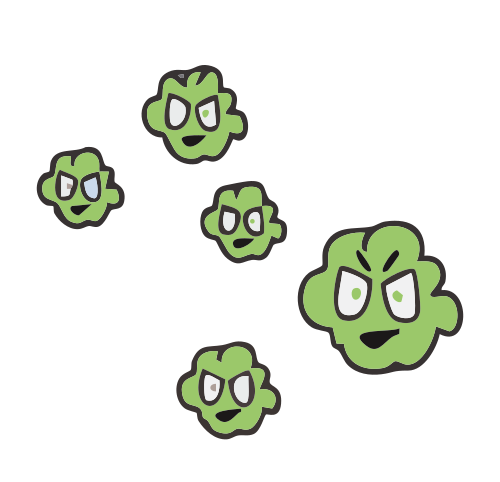
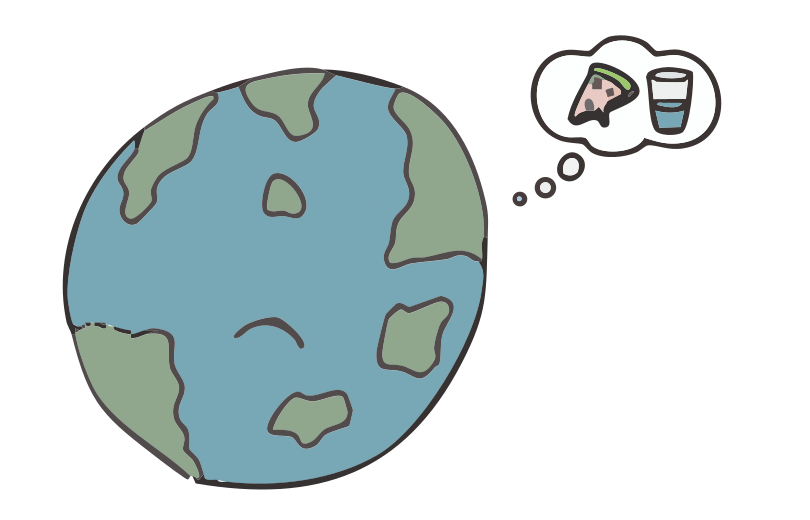
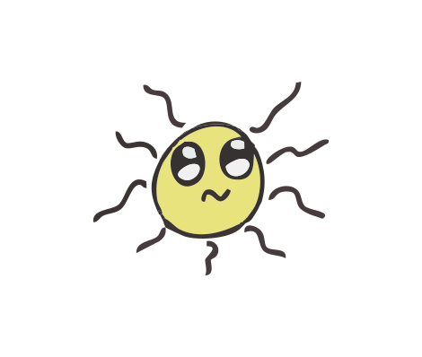
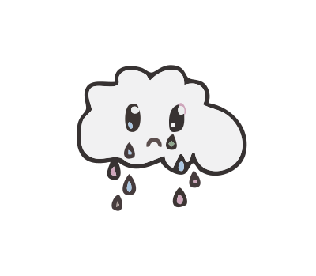
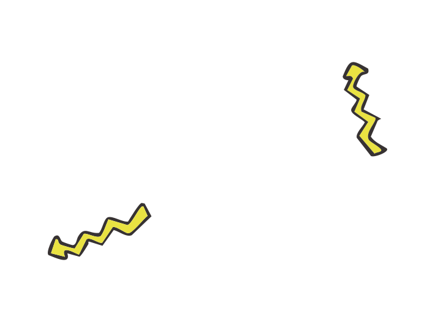